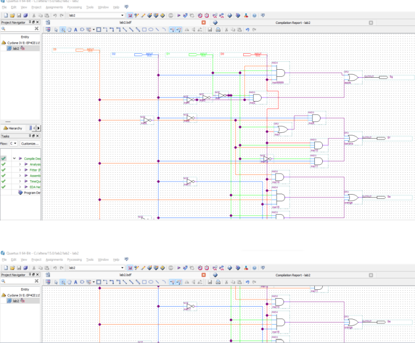

Fusing Creativity and Technology
In this project, my primary responsibility was the seamless integration of a Seven-Segment Display with a Terasic FPGA Board. This task involved a series of intricate steps, each contributing to the overall success of the integration.
First and foremost, I took charge of configuring pin assignments on the FPGA. This was a critical step as it required an in-depth understanding of the Seven-Segment Display's specifications and the FPGA's pin configuration. By meticulously mapping the connections between the display and the FPGA, I ensured a robust foundation for the subsequent stages of the integration process.
The programming of the FPGA was a pivotal aspect of the project. Leveraging my skills in FPGA programming, I wrote and implemented the necessary code to enable communication between the FPGA and the Seven-Segment Display. This coding process involved not only technical proficiency but also a strategic approach to optimize performance and functionality.
Once the FPGA was programmed, thorough testing of the Seven-Segment Display integration became the focus. Rigorous testing protocols were employed to validate the accuracy and reliability of the display output. This testing phase was not just a formality; it served as a crucial quality assurance step to guarantee the flawless operation of the integrated system.
One notable aspect of my contribution to this project was the holistic approach to hardware integration. Beyond the technicalities of pin configuration and coding, I ensured a comprehensive understanding of how the Seven-Segment Display aligns with the broader functionality of the FPGA Board. This holistic perspective allowed me to identify potential areas of improvement and optimization, contributing to the overall efficiency of the integrated system.
The significance of this project lies in the demonstration of my multidimensional skills. From configuring pin assignments and programming the FPGA to rigorous testing and holistic hardware integration, each step was a deliberate action aimed at achieving a seamless and effective Seven-Segment Display integration.
The insights gained from this project extend beyond the immediate success of the integration. It reflects my ability to translate theoretical knowledge into practical applications, showcasing proficiency in digital design, FPGA programming, and hardware integration. This project underscores my capacity to navigate the intricacies of hardware systems and deliver tangible results that align with performance and functionality requirements.